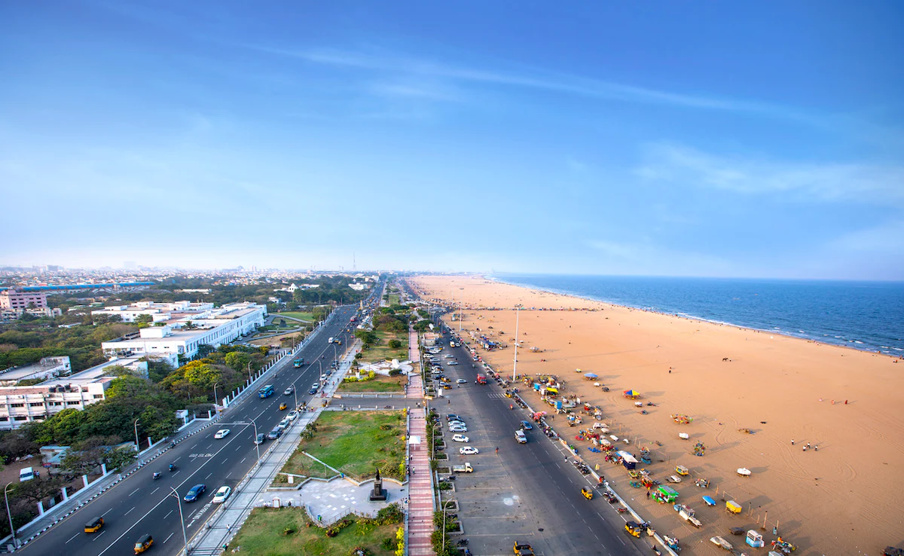
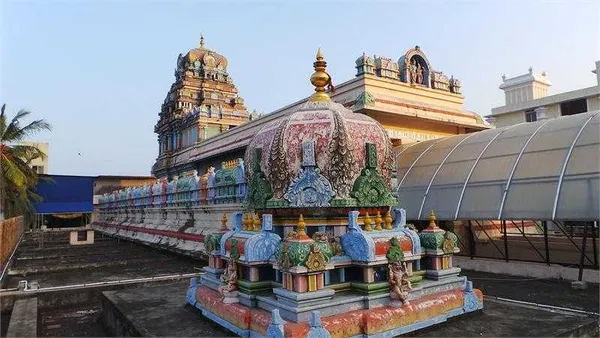
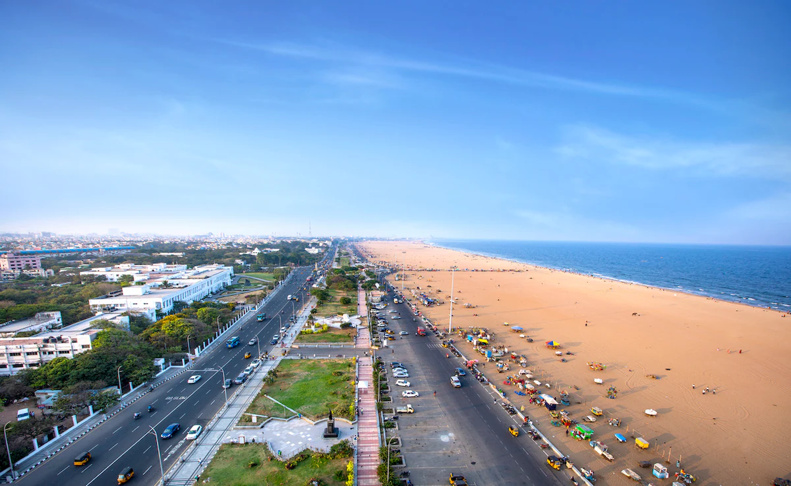
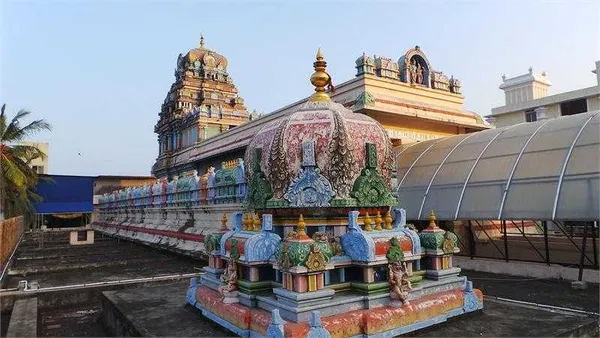

Chennai, the vibrant capital of Tamil Nadu, is a major cultural and economic hub on the Coromandel Coast known for its rich South Indian heritage, spanning historic temples like the 7th-century Kapaleeshwarar Temple and the coastal Ashtalakshmi Temple. It seamlessly blends tradition with modern city life, offering iconic landmarks, bustling bazaars, and renowned South Indian cuisine. The city is famous for its extensive coastline along the Bay of Bengal, featuring Marina Beach, the world's second-longest urban beach, and the popular Elliot's Beach. Other notable spots include the scenic Covelong Beach and the family-friendly VGP Golden Beach, which offer a perfect blend of relaxation, water sports, and stunning sunrise views.